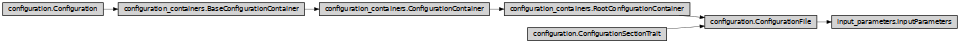

InputParameters
- class ase2sprkkr.input_parameters.input_parameters.InputParameters(definition, inputfile=None, outputfile=False)[source]
It holds the configuration values for a SPR-KKR task and run the task
This class is a ConfigurationContainer, thus, it holds the configuration values for the task. Moreover, according to its definition, it can run the task - execute the executable with proper parameters - and instantiate the result class, which then parse the output of the task.
Class hierarchy
Constructor
- __init__(definition, inputfile=None, outputfile=False)[source]
Create the container and its members, according to the definition
- resolve_executable_suffix(postfix)[source]
” Return the postfix, that is appended after the name of SPR-KKR executable.
- Parameters
postfix (Union[str, bool]) –
If str is given, it is left as is.
- If True, return the default value:
config.sprkkr_executable_suffix
- (content of SPRKKR_EXECUTABLE_SUFFIX env variable
or a user_defined_value)
If False, return ‘’
- property task_name
Return the task name, as defined in the definition of the parameters (see InputParametersDefinition class)
- _default_mpi_runner = None
- classmethod default_mpi_runner(auto=False)[source]
- Return the executable and its params to run a mpi task.
The runner is determined by autodetection.
- Parameters
auto (bool) –
- If true,
do not warn if no mpi is found
check the number of available cpus, do not return a runner, if there is only one
- Returns
mpi_runner – List of strings with executable and its parameters to run a mpi task. E.g. [ ‘mpirun’ ] If no suitable runner is found, return False.
- Return type
list or False
- mpi_runner(mpi)[source]
Return a shell command to execute a mpi task.
- Parameters
mpi_runner –
- Returns
mpi_runner – List of strings with the executable and its parameters, e.g.
['mpirun', '-np', '4']
- Return type
list
- is_mpi(mpi=True)[source]
Will be this task (the task described by this input parameters) runned using mpi?
- Parameters
mpi (list or str or bool) – Optional parameter. If False is given, return False regardless the type of the task, otherwise it is ignored. See InputParameters.mpi_runner for the explanation of the parameter.
- Returns
is_mpi – Will be this task runned using mpi?
- Return type
bool
- run_process(calculator, input_file, output_file, directory='.', print_output=None, executable_suffix=None, mpi=None, gdb=False)[source]
Run the process that calculate the task specified by this input paameters
- calculator: ase2sprkkr.sprkkr.calculator.SPRKKR
Calculator, used for running the task. Various configurations are readed from them.
- directory: str
Where to run the calculation
- input_file: file
File, where the input parameters for the task are stored.
- output_file: file
File, where the output will be writed. It should be opened for writing (in binary mode)
- print_output: bool or str
Print the output to the stdout, too? String value ‘info’ prints only selected infromations (depending on the task runned)
- executable_suffix: str or None
Postfix, appended to the name of the called executable (sometimes, SPRKKR executables are compiled so that the resulting executables has postfixies)
- mpi: list or str or bool
Run the task using mpi? See InputParameters.mpi_runner for the possible values of the parameter.
- Returns
out – The result of ase2sprkkr.common.process_output_reader.ProcessOutputReader.run() method: the parsed output of the runned task.
- Return type
mixed
- result_reader(calculator=None, directory=None)[source]
Return the result readed: the class that parse the output of the runned task
- calculator
Calculator, which will be attached to the resulting class for ruther processing the results
- directory
Directory, to which will be related the relative paths in the result. If none, get the directory from the calculator, or the current directory
- read_output_from_file(filename, directory=None)[source]
Read output of a previously runned task from a file and parse it in a same way, as the process would be runned again.
- filename
Filename, from which the result will be read
- directory
A directory, to which are related the paths in the output Default None means the directory, where the file is
- executable_params(directory=None)[source]
- Return type
([executable], stdin, stdout) params for process.Popen
- definitions = {'ARPES': <INPUT PARAMETERS arpes>, 'BSF': <INPUT PARAMETERS bsf>, 'DOS': <INPUT PARAMETERS dos>, 'GILBERT': <INPUT PARAMETERS gilbert>, 'JXC': <INPUT PARAMETERS jxc>, 'MARPES': <INPUT PARAMETERS arpes>, 'PHAGEN': <INPUT PARAMETERS phagen>, 'SCF': <INPUT PARAMETERS scf>}
- classmethod create_input_parameters(arg)[source]
Create input_parameters object
- Parameters
arg (str or InputParameters) – If an InputParameters object is given, it is returned as is. If a string is given, it is interpreted either as a filename (from which the parameters are read) or the task name, for which the default parameters are used
- Returns
input_parameters
- Return type
- classmethod create(name)[source]
Create input parameters for the given task name :param name: Name of the task (e.g. ‘SCF’, ‘PHAGEN’) :type name: str
- Returns
input_parameters – Input parameters with the default values for the given task.
- Return type
- classmethod from_file(filename, allow_dangerous=False)[source]
Read an input file and create a new InputParameters object from the readed stuff
- Parameters
filename (str or file) – Input file (either its filename, or an open file)
allow_dangerous (bool) – Allow to read dangerous values of options: i.e. the values that do not fullfil the required type of the given option or its other requirements.
- calculate(*args, **kwargs)[source]
Create a calculator and run the input_parameters. See SPRKKR.calculate for the arguments
- change_task(task)[source]
Change the task to the given task. Retain the value of the options, that are present in the new task.
- save_to_file(file, atoms=None, *, validate='save')[source]
Save the configuration to a file in a given format.
This routine do some basic stuff and then call _save_to_file routine, that contains the implementation specific for the type of the configuration container/value.
- Parameters
file (str or file) – File to read the data from
validate – Validate the data in the container first and raise an exception, if there is an error (e.g. the the data are not complete). The string value can be used to select the type of validation
savemeans the full check (same as the default valueTrue), usesetto allow some missing values.